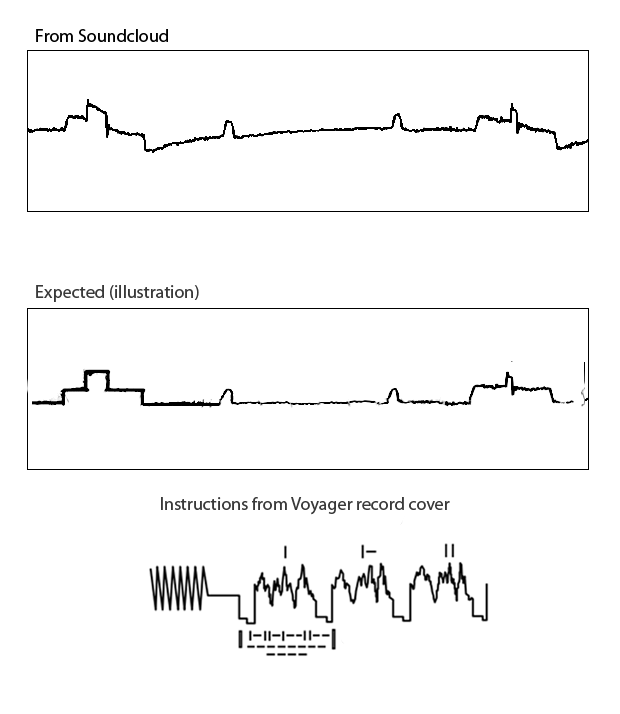

Canal Esquerdo
Osciloscópio + imagem decodificada
Esta página carrega um MP3 com a leitura do disco e faz a decodificação no seu navegador, linha a linha, em tempo real. Cada canal de áudio contém um conjunto diferente de imagens.
